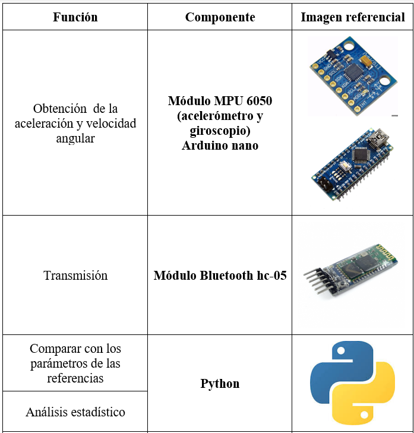

1. Consideraciones del diseño
1.1 Definición de entradas y salidas
Entradas
- Movimiento
- Giros
- Energía
La dificultad para empezar el movimiento y/o la lentitud de este indica el riesgo a sufrir de un episodio de congelamiento de la marcha (FoG). Es por eso que se mide el cambio de aceleración del paciente al caminar.
La capacidad o incapacidad de giro es un indicador de la presencia o predisposición a sufrir de un episodio de congelamiento de la marcha (FoG). Mientras haya mayor dificultad de giro, es más probable que se encuentre en un episodio de FoG. Es por eso que se censa la velocidad angular del paciente al girar.
La fuente que energiza al prototipo
Salidas
- Datos cuantitativos
- Datos cualitativos
- Energía
Se obtendrá la relación entre la velocidad angular y la aceleración con el tiempo, expresada en una gráfica para una mejor interpretación hecha por el médico tratante.
A través de la frecuencia de episodios de FoG ocurridos en un periodo de tiempo y con el apoyo del médico tratante determinar el estado de la enfermedad.
Energía liberada residual en forma de calor y/o luminosa.
1.2.Definición de las subfunciones que componen el sistema
- Recolección de datos
- Transmisión
- Análisis de datos
- Mostrar datos al usuario
- Almacenamiento
Se obtiene a partir de los movimientos que realiza el paciente. Obtención de la aceleración y velocidad angular: Se mide la posición del paciente en cada instante de tiempo de su vida diaria y a partir de esto se obtienen los valores de aceleración y velocidad angular.
Se transmiten los datos obtenidos para un posterior análisis.
De acuerdo con una investigación [31] que analiza giros de 180 y 360 grados en dos grupos: personas con EP (FoG+) y sin EP (FoG-) , calcularon medidas objetivas como la duración del giro, la velocidad máxima, sacudidas y la aceleración basándose solo en un sensor inercial colocado en la parte inferior del tronco. Cabe mencionar que para la separación de grupos, se tomó en cuenta la edad y la gravedad de la enfermedad calificada por la norma MDS-UPDRS de la sección III [32] de examinación motora. Asimismo, se les retiró el medicamento más de 12 horas antes de las pruebas. Como resultados obtuvieron que la duración del giro tanto en 360 y 180 duró más para FoG+ que para FoG- con una diferencia de 4 s y 2s respectivamente. De igual manera, se encontró un efecto significativo para la velocidad máxima de giro siendo de mayor magnitud para FoG+, concluyendo que al girar ángulos más agudos puede plantear más dificultades para FoG+
o Otro estudio [33] que utiliza un acelerómetro en la parte inferior de la espalda también analizó el parámetro de aceleración para poder diferenciar episodios de FoG. Aquí consideraron 9 personas que hayan obtenido una puntuación entre 2 o 4 en la norma UPDRS y se les hizo caminar de 0 a 15 minutos. Antes de las pruebas se les pidió no consumir el medicamento diario. Para analizar sus resultados, lo hicieron en base a 2 tipos de algoritmos, uno de ellos era RMS que identificó una aceleración menor de 10 m/s2 cuando la persona se encuentra en bipedestación, superior a 12 m/s2 durante marcha normal, y durante episodios de FoG entre 10 y 12 m/s2
Elaborar gráficas y estandarizar los resultados: Se calcula la media, mediana y el rango en el ocurre los episodios de FoG del paciente. Estos datos serán mostrados mediante una aplicación móvil.
Idealmente los datos serían almacenados en un servidor pero dado que el dispositivo es de baja fidelidad se hará uso de una base de datos.
1.3. Matriz morfológica para las subfunciones
2. Diseño e implementación de las subfunciones
Pseudocódigo


Esquema electrónico
Diseño mecánico
Se hizo uso de una correa elástica ajustable y una caja de PLA con el nombre de nuestro prototipo, el cual presenta un tamaño adecuado para que el prototipo sea lo más ergonómico posible sin afectar el desarrollo diario del paciente.
Diseño de la aplicación
Se implementó una aplicación a través de Kivy que se conectara con el dispositivo por medio de bluetooth. La aplicación presenta una pantalla de inicio en donde el usuario puede elegir iniciar su sesión o registrarse en la aplicación. Al registrarse, el usuario tiene que ingresar todos sus datos personales y su contraseña para poder acceder a esta.
3. Experimentos enfocados de las funciones y/o experiencias críticas
Mediante la matriz de retroalimentación, la cual se enfocó en todo el prototipo, se pudo concluir que los puntos fuertes de este fueron su ligereza, el diseño amigable de la aplicación y su accesibilidad económica. Por otro lado, los puntos a mejorar son la precisión y la eliminación del ruido que existe al momento de la toma de datos. Asimismo, se sugirió reducir el tamaño del componente para que pueda ser escondido debajo de la ropa, también cambiar la alimentación del dispositivo por una batería recargable y tener acceso a una base de datos con la cual se puedan realizar comparaciones más precisas. Finalmente, las ideas que surgieron fueron crear una red propia entre los pacientes de Parkinson para poder generar nuestra propia base de datos; que el dispositivo sea capaz de predecir caídas y habilitar una función que permita la comunicación entre el médico y el paciente.

Se consideró que la subfunción más importante es la de análisis de datos, ya que es la cual nos permite interpretar los datos obtenidos y, así poder puntos de mejora.
Análisis de datos
Para poder verificar el funcionamiento de esta subfunción, se colocó manualmente datos similares a los del estudio que se tomó como referencia para el análisis de datos, dicho estudio se encuentra referenciado líneas arriba. El resultado fue conforme a lo esperado.